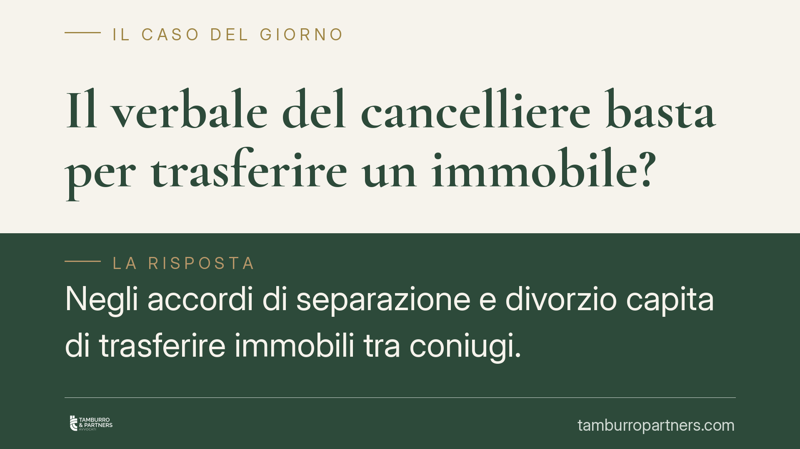

Il verbale del cancelliere basta per trasferire un immobile?
Negli accordi di separazione e divorzio capita di trasferire immobili tra coniugi. Ci si chiede se il verbale d'udienza sottoscritto dal cancelliere basti a trascrivere il passaggio, senza atto notarile. Le Sezioni Unite hanno chiarito i confini: il verbale funziona come titolo, ma solo entro precise condizioni. Fuori da quel perimetro serve altro.

Il punto della questione
Quando due coniugi decidono di separarsi o divorziare, spesso regolano anche i rapporti patrimoniali. Tra questi rientra il trasferimento di un immobile: la casa familiare passa all'uno o all'altro, oppure viene ceduta ai figli.
La domanda pratica è semplice. Il verbale d'udienza, redatto dal cancelliere e omologato dal giudice, è sufficiente per trascrivere il trasferimento nei registri immobiliari? Oppure occorre comunque un rogito notarile?
La risposta incide sui costi e sui tempi della procedura, ed è stata a lungo controversa.
Inquadramento normativo
Per trascrivere un trasferimento immobiliare l'art. 2657 cod. civ. richiede un titolo qualificato: sentenza, atto pubblico o scrittura privata con sottoscrizione autenticata. Non basta un documento qualsiasi.
L'atto pubblico, secondo l'art. 2699 cod. civ., è quello redatto da un pubblico ufficiale autorizzato ad attribuirgli pubblica fede. Il cancelliere è un pubblico ufficiale. Il verbale d'udienza è quindi, tecnicamente, un atto pubblico.
La Corte di Cassazione a Sezioni Unite, con la sentenza n. 21761 del 27 luglio 2021, ha stabilito che gli accordi di trasferimento immobiliare contenuti nei verbali di separazione consensuale e di divorzio congiunto sono validi e costituiscono titolo idoneo alla trascrizione ex art. 2657 cod. civ. Il verbale, sottoscritto dalle parti e dal cancelliere e recepito nel provvedimento del giudice, ha la stessa efficacia di un atto pubblico ricevuto dal notaio.
Le Sezioni Unite hanno però posto una condizione tecnica non trascurabile: restano fermi i controlli di regolarità urbanistica e catastale previsti dalla legge. Il cancelliere non svolge le verifiche che il notaio è tenuto a eseguire (conformità catastale, menzioni urbanistiche, attestato di prestazione energetica). Quelle dichiarazioni devono comunque risultare dall'accordo, a cura delle parti.
Attenzione al perimetro: la conciliazione ex art. 322 c.p.c.
Discorso diverso vale per la conciliazione non contenziosa davanti al giudice di pace, disciplinata dall'art. 322 c.p.c. In questo caso il verbale ha valore di titolo esecutivo, ma la sua idoneità a trasferire diritti reali immobiliari e a essere trascritto incontra limiti più stringenti.
La conciliazione ex art. 322 c.p.c. non nasce all'interno di un procedimento contenzioso e non è accompagnata dallo stesso controllo giurisdizionale che caratterizza gli accordi di separazione e divorzio. Per questo non se ne può automaticamente estendere la disciplina favorevole delineata dalle Sezioni Unite.
È un distinguo che spiega perché la stessa struttura documentale, il verbale, produca effetti diversi a seconda della sede in cui viene formata.
Cosa cambia in concreto
Per chi si separa o divorzia consensualmente, l'orientamento delle Sezioni Unite rappresenta un vantaggio operativo: è possibile inserire direttamente nell'accordo il trasferimento dell'immobile ed evitare un successivo passaggio dal notaio, con risparmio di tempo e di spese.
Questo non significa che l'intervento del professionista diventi superfluo. Le dichiarazioni urbanistiche e catastali, obbligatorie a pena di nullità per l'art. 1350 cod. civ. e per la normativa di settore, vanno redatte con precisione. Un errore in questa fase può rendere l'atto inidoneo alla trascrizione o esporre le parti a contestazioni successive.
Inoltre l'Agenzia del Territorio e il conservatore dei registri immobiliari verificano la completezza formale del titolo prima di procedere. Un verbale incompleto viene respinto.
Cosa fare in concreto
- Verificate la sede corretta. L'accordo con effetti reali va formato nell'ambito della separazione o del divorzio, non tramite conciliazione ex art. 322 c.p.c., che ha limiti diversi.
- Inserite tutte le menzioni obbligatorie. Conformità catastale, dati urbanistici e attestazione energetica devono comparire nel verbale, a cura delle parti.
- Controllate la corrispondenza tra stato di fatto e dati catastali prima dell'udienza, evitando difformità che bloccano la trascrizione.
- Fate assistere la redazione dell'accordo da un professionista, così da presidiare la parte tecnica che il cancelliere non verifica.
- Curate tempestivamente la trascrizione presso il conservatore una volta ottenuta l'omologa o la sentenza.
La possibilità di trasferire un immobile con il solo verbale è reale, ma non è automatica. Dipende dalla sede procedurale e dalla completezza dell'accordo.
Disclaimer
Contributo informativo a cura di Tamburro & Partners - Avv. Giuseppe Tamburro. Non costituisce parere legale.
Ogni famiglia ha il suo equilibrio.
Separazione, divorzio, affidamento, assegno: se vuoi un confronto riservato su una specifica situazione, scrivi allo studio. Ti rispondiamo entro un giorno lavorativo.